!which pip~/projects/data/Brickman/conda/envs/scvi-1.1.5/bin/pip!which pip~/projects/data/Brickman/conda/envs/scvi-1.1.5/bin/pip%matplotlib inline
%load_ext autoreload
%autoreload 2
import scvi
import anndata
import numpy as np
import pandas as pd
import scanpy as sc
import seaborn as sns
import matplotlib.pyplot as plt
plt.rcParams['svg.fonttype'] = 'none'
lineage_colors = {
'Zygote': '#7985A5',
'2C': '#B3C81E',
'4C': '#67BB30',
'8C': '#028A46',
'16C': '#657cbd',
'ICM': '#F6C445',
'TE': '#5a94ce',
'EPI': '#B46F9C',
'PrE': '#D05B61'
}
mouse_ct_colors = {
'Zygote': '#7985A5',
'2C': '#B3C81E',
'4C': '#67BB30',
'8C': '#028A46',
'16C': '#657cbd',
'E3.25-ICM': '#fadc8f',
'E3.25-TE': '#5185b9',
'E3.5-ICM': '#f8d06a',
'E3.5-TE': '#7ba9d8',
'E3.5-EPI': '#c38cb0',
'E3.5-PrE': '#d97c81',
'E3.75-ICM': '#F6C445',
'E4.5-TE': '#5a94ce',
'E4.5-EPI': '#B46F9C',
'E4.5-PrE': '#D05B61',
'Unknown': 'lightgrey'
}import sys; sys.path.append("../scripts/")
from helpers import normalize_smartseqmouse = sc.read_h5ad("/home/fdb589/Brickman/projects/proks-salehin-et-al-2023/data/processed/01_mouse_reprocessed.h5ad")
mouse.obs['ct_custom'] = mouse.obs.ct.replace('E3.75-ICM', 'Unknown')
# sc.pp.highly_variable_genes(mouse, flavor="cell_ranger", n_top_genes=3_000, batch_key="batch", subset=True)
sc.pp.highly_variable_genes(mouse, flavor="seurat_v3", n_top_genes=3_000, batch_key="batch", layer='counts', subset=True)
mouse.obs['batch_og'] = mouse.obs['batch']
mouse.obs['batch'] = mouse.obs.batch
# mouse.obs['batch'] = mouse.obs.technology.cat.codes.astype(str) + "_" + mouse.obs.batch.cat.codes.astype(str)
# mouse.obs['batch'] = mouse.obs.technology.cat.codes.astype(str) + "_" + mouse.obs.experiment.cat.codes.astype(str) + mouse.obs.batch.cat.codes.astype(str)
scvi.model.SCVI.setup_anndata(mouse, layer="counts", batch_key="batch")
vae = scvi.model.SCVI(mouse, n_layers=2, gene_likelihood='nb')
vae.train(max_epochs=400, early_stopping=True)
lvae = scvi.model.SCANVI.from_scvi_model(vae, adata=mouse, labels_key="ct_custom", unlabeled_category="Unknown")
lvae.train(max_epochs=20, n_samples_per_label=15)
mouse.obsm['X_scVI'] = vae.get_latent_representation()
mouse.obsm['X_scANVI'] = lvae.get_latent_representation()mouse.obs['predictions'] = lvae.predict()
mouse.obs['predictions'] = mouse.obs['predictions'].astype('category')
mouse.obs['predictions_stages'] = [x.split('-')[-1] for x in mouse.obs.predictions]
mouse.obs['predictions_stages'] = mouse.obs['predictions_stages'].astype('category')
mouse.uns['predictions_colors'] = [mouse_ct_colors[ct] for ct in mouse.obs.predictions.cat.categories]
mouse.uns['predictions_stages_colors'] = [lineage_colors[ct] for ct in mouse.obs.predictions_stages.cat.categories]mouse.obs.query('ct == "E3.75-ICM"')['predictions'].value_counts()sc.pp.neighbors(mouse, use_rep='X_scVI')
sc.tl.umap(mouse)
sc.tl.diffmap(mouse)
sc.tl.paga(mouse, groups='predictions')
sc.pl.paga(mouse, color=['predictions'], frameon=False, fontoutline=True)
sc.tl.draw_graph(mouse, init_pos='paga', n_jobs=10)sc.pl.umap(mouse, color=['technology', 'predictions', 'predictions_stages'], wspace=0.3)
sc.pl.draw_graph(mouse, color=['technology', 'predictions', 'predictions_stages'], wspace=0.3)mouse.obs.value_counts(['technology', 'predictions']).unstack().fillna(0)vae.save("../results/12_mouse/scvi", overwrite=True, save_anndata=True)
lvae.save("../results/12_mouse/scanvi_ns15", overwrite=True, save_anndata=True)# ## Updated AI model
# vae = scvi.model.SCVI.load("../../proks-salehin-et-al-2023/results/02_mouse_integration/scvi/")
# # Retraining
# vae.adata.obs['ct_custom'] = vae.adata.obs.ct.replace('E3.75-ICM', 'Unknown')
# lvae = scvi.model.SCANVI.from_scvi_model(vae, labels_key="ct_custom", unlabeled_category="Unknown")
# lvae.train(n_samples_per_label=15)
# # lvae.save("../results/12_mouse/scanvi_ns_15", overwrite=True, save_anndata=True)lvae = scvi.model.SCANVI.load('../results/12_mouse/scanvi_ns15')
lvae.adata.obs['predictions'] = lvae.predict()lvae.adata.obs.query('ct == "E3.75-ICM"')['predictions'].value_counts()order = ['Zygote', '2C', '4C', '8C', '16C', 'E3.25-ICM', 'E3.25-TE', 'E3.5-ICM',
'E3.5-TE', 'E3.5-EPI', 'E3.5-PrE', 'E4.5-TE', 'E4.5-EPI', 'E4.5-PrE']
ax = sns.heatmap(
sc.metrics.confusion_matrix('ct', 'predictions', lvae.adata.obs).loc[order, order],
linewidths=0.2, cmap='viridis', square=True, linewidth=.5, linecolor='black'
)GENE_LEN = '~/Brickman/shared/references/mus_musculus/ensembl/GRCm38_102/Mus_musculus_GRCm38_102_gene_length.txt'
# adata = sc.read_h5ad("../data/external/niakan_et_al/mouse/mtx_conversions/combined_matrix.h5ad")
adata = sc.read_h5ad("../data/assays/SCR_MP_20241207/processed/combined_matrix.h5ad")
adata.obs['LIMS.ID'] = adata.obs['sample'].str.split('_', expand=True).iloc[:, 0]
adata.obs = adata.obs.merge(pd.read_csv("../data/assays/SCR_MP_20241207/raw/Samples_LIMSID_Mouse.csv"),
left_on='sample', right_on='LIMS.ID', how='left').set_index(adata.obs_names)
adata.obs['batch'] = 'NIAKAN_' + adata.obs['Plate.no'].astype(str)
adata.obs['experiment'] = "Simon et al, 2024"
adata.obs['technology'] = "SMART-seq2"
adata = adata[~adata.obs['sample'].isin(['SIM5111A40', 'SIM5111A48'])]
adata = adata[adata.obs.QC == "Pass"]
adata = adata[~adata.obs.Treatment.isna()].copy()
adata.var['mt'] = adata.var.gene_symbol.str.startswith('mt-')
sc.pp.calculate_qc_metrics(adata, qc_vars=['mt'], percent_top=None, log1p=False, inplace=True)
adata = adata[adata.obs.pct_counts_mt < 25].copy()
adata = normalize_smartseq(adata, GENE_LEN)
adata.var['gene_id'] = adata.var_names
adata.var_names = adata.var.gene_symbol.str.lower().values
adata.var_names_make_unique()
adata.layers["counts"] = adata.X.copy()
sc.pp.normalize_total(adata)
sc.pp.log1p(adata)
adata.raw = adata
sc.pp.highly_variable_genes(adata, flavor="cell_ranger", n_top_genes=3_000, batch_key="batch")
sc.tl.pca(adata)
sc.pl.pca(adata, color='Treatment')
display(adata.obs.Treatment.value_counts())
adata.write('../results/12_niakan.mouse.h5ad')mouse_query = sc.read_h5ad('../results/12_niakan.mouse.h5ad')
del mouse_query.varm['PCs']
lvae = scvi.model.SCANVI.load("../results/12_mouse/scanvi_ns15")
scvi.model.SCANVI.prepare_query_anndata(mouse_query, lvae)
lvae_q = scvi.model.SCANVI.load_query_data(mouse_query, lvae)
lvae_q.train(max_epochs=100, plan_kwargs=dict(weight_decay=0.0), check_val_every_n_epoch=10, early_stopping=True)Trainer will use only 1 of 4 GPUs because it is running inside an interactive / notebook environment. You may try to set `Trainer(devices=4)` but please note that multi-GPU inside interactive / notebook environments is considered experimental and unstable. Your mileage may vary.
/home/fdb589/projects/data/Brickman/conda/envs/scvi-1.1.5/lib/python3.10/site-packages/lightning/fabric/plugins/environments/slurm.py:191: The `srun` command is available on your system but is not used. HINT: If your intention is to run Lightning on SLURM, prepend your python command with `srun` like so: srun python /home/fdb589/projects/data/Brickman/conda/envs/scvi- ...
/home/fdb589/projects/data/Brickman/conda/envs/scvi-1.1.5/lib/python3.10/site-packages/scvi/model/base/_utils.py:66: FutureWarning: You are using `torch.load` with `weights_only=False` (the current default value), which uses the default pickle module implicitly. It is possible to construct malicious pickle data which will execute arbitrary code during unpickling (See https://github.com/pytorch/pytorch/blob/main/SECURITY.md#untrusted-models for more details). In a future release, the default value for `weights_only` will be flipped to `True`. This limits the functions that could be executed during unpickling. Arbitrary objects will no longer be allowed to be loaded via this mode unless they are explicitly allowlisted by the user via `torch.serialization.add_safe_globals`. We recommend you start setting `weights_only=True` for any use case where you don't have full control of the loaded file. Please open an issue on GitHub for any issues related to this experimental feature.
model = torch.load(model_path, map_location=map_location)
/home/fdb589/projects/data/Brickman/conda/envs/scvi-1.1.5/lib/python3.10/site-packages/anndata/_core/merge.py:1362: UserWarning: Only some AnnData objects have `.raw` attribute, not concatenating `.raw` attributes.
warn(
Trainer will use only 1 of 4 GPUs because it is running inside an interactive / notebook environment. You may try to set `Trainer(devices=4)` but please note that multi-GPU inside interactive / notebook environments is considered experimental and unstable. Your mileage may vary.
/home/fdb589/projects/data/Brickman/conda/envs/scvi-1.1.5/lib/python3.10/site-packages/lightning/fabric/plugins/environments/slurm.py:191: The `srun` command is available on your system but is not used. HINT: If your intention is to run Lightning on SLURM, prepend your python command with `srun` like so: srun python /home/fdb589/projects/data/Brickman/conda/envs/scvi- ...
/home/fdb589/projects/data/Brickman/conda/envs/scvi-1.1.5/lib/python3.10/site-packages/scvi/data/_manager.py:215: UserWarning: Missing labels key ct_custom. Filling in with unlabeled category Unknown.
field_registry[_constants._STATE_REGISTRY_KEY] = field.transfer_field(
Trainer will use only 1 of 4 GPUs because it is running inside an interactive / notebook environment. You may try to set `Trainer(devices=4)` but please note that multi-GPU inside interactive / notebook environments is considered experimental and unstable. Your mileage may vary.
/home/fdb589/projects/data/Brickman/conda/envs/scvi-1.1.5/lib/python3.10/site-packages/lightning/fabric/plugins/environments/slurm.py:191: The `srun` command is available on your system but is not used. HINT: If your intention is to run Lightning on SLURM, prepend your python command with `srun` like so: srun python /home/fdb589/projects/data/Brickman/conda/envs/scvi- ...
GPU available: True (cuda), used: True
TPU available: False, using: 0 TPU cores
IPU available: False, using: 0 IPUs
HPU available: False, using: 0 HPUs
/home/fdb589/projects/data/Brickman/conda/envs/scvi-1.1.5/lib/python3.10/site-packages/lightning/fabric/plugins/environments/slurm.py:191: The `srun` command is available on your system but is not used. HINT: If your intention is to run Lightning on SLURM, prepend your python command with `srun` like so: srun python /home/fdb589/projects/data/Brickman/conda/envs/scvi- ...
LOCAL_RANK: 0 - CUDA_VISIBLE_DEVICES: [0,1,2,3]
/home/fdb589/projects/data/Brickman/conda/envs/scvi-1.1.5/lib/python3.10/site-packages/lightning/pytorch/trainer/connectors/data_connector.py:441: The 'train_dataloader' does not have many workers which may be a bottleneck. Consider increasing the value of the `num_workers` argument` to `num_workers=223` in the `DataLoader` to improve performance.
/home/fdb589/projects/data/Brickman/conda/envs/scvi-1.1.5/lib/python3.10/site-packages/lightning/pytorch/loops/fit_loop.py:293: The number of training batches (1) is smaller than the logging interval Trainer(log_every_n_steps=10). Set a lower value for log_every_n_steps if you want to see logs for the training epoch.
/home/fdb589/projects/data/Brickman/conda/envs/scvi-1.1.5/lib/python3.10/site-packages/lightning/pytorch/trainer/connectors/data_connector.py:441: The 'val_dataloader' does not have many workers which may be a bottleneck. Consider increasing the value of the `num_workers` argument` to `num_workers=223` in the `DataLoader` to improve performance.INFO File ../results/12_mouse/scanvi_ns15/model.pt already downloaded
INFO Found 84.83333333333334% reference vars in query data.
INFO Training for 100 epochs.
Epoch 91/100: 91%|█████████ | 91/100 [00:02<00:00, 32.87it/s, v_num=1, train_loss_step=1.51e+4, train_loss_epoch=1.51e+4]
Monitored metric elbo_validation did not improve in the last 45 records. Best score: 13435.031. Signaling Trainer to stop.mouse_query = sc.read_h5ad('../results/12_niakan.mouse.h5ad')
mouse_query.obsm["X_scANVI"] = lvae_q.get_latent_representation()
mouse_query.obs['predictions'] = lvae_q.predict()
# remove TE cells
# mouse_query = mouse_query[~mouse_query.obs.predictions.str.contains('TE')].copy()
mouse_query.obs['predictions'] = mouse_query.obs['predictions'].astype('category')
mouse_query.obs['entropy'] = 1 - lvae_q.predict(soft=True).max(axis=1)
mouse_query.uns['predictions_colors'] = [mouse_ct_colors[ct] for ct in mouse_query.obs.predictions.cat.categories]sc.pp.neighbors(mouse_query)
sc.tl.pca(mouse_query)
sc.tl.umap(mouse_query)plt.rcParams['figure.figsize'] = [5, 4]
ax = sc.pl.pca(mouse_query, color = ['predictions', 'entropy', 'Treatment'], wspace=0.25, vmax=1, return_fig=True)
ax.savefig('../figures/12_niakan_mouse_PCA.pdf')
ax = sc.pl.pca(mouse_query, color = [
'pou5f1', 'sox2', 'nanog',
'gata6', 'gata4', 'pdgfra',
'cdx2', 'hand1', 'krt7'
], ncols=3, return_fig=True)
ax.savefig('../figures/12_niakan_mouse_PCA_markers.pdf')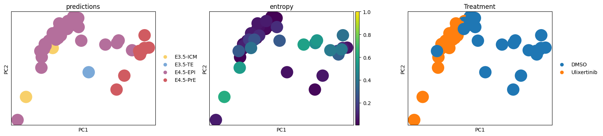
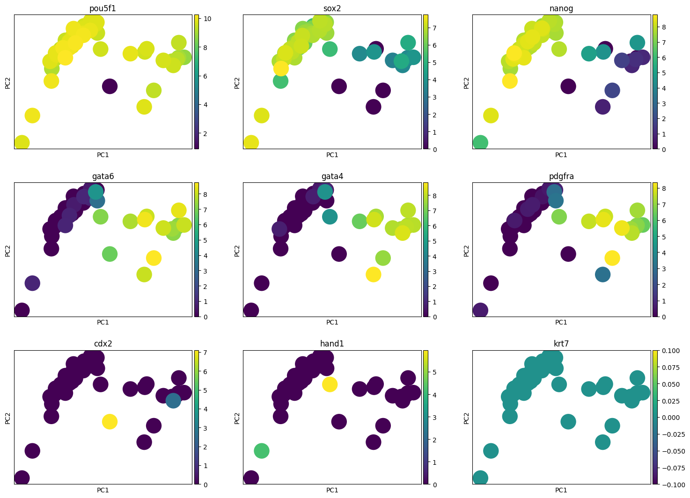
markers = {
'EPI': ['pou5f1', 'sox2', 'nanog'],
'PrE': ['gata6', 'gata4', 'pdgfra'],
'TE': ['cdx2', 'hand1', 'krt7']
}
ax = sc.pl.dotplot(mouse_query, markers, groupby='Treatment', return_fig=True)
ax.savefig('../figures/12_niakan_mouse_dotplot_markers.pdf')
ax = sc.pl.matrixplot(adata, markers, groupby='Treatment', dendrogram=True, return_fig=True)
ax.savefig('../figures/12_niakan_mouse_matrixplot_markers.pdf')NameError: name 'adata' is not defined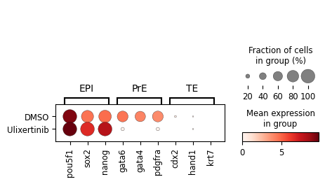
# plt.rcParams['figure.figsize'] = [5, 4]
# ax = sc.pl.umap(mouse_query, color=['predictions'], s=120, return_fig = True)
# ax.savefig('../figures/niakan_12_mouse_UMAP_01.pdf')# plt.rcParams['figure.figsize'] = [5, 4]
# ax = sc.pl.umap(mouse_query, color=['Treatment'], s=120, return_fig = True)
# ax.savefig('../figures/niakan_12_mouse_UMAP_02.pdf')plt.rcParams['figure.figsize'] = [10, 4]
cmtx = sc.metrics.confusion_matrix('Treatment', 'predictions', normalize=True, data=mouse_query.obs)
ax = cmtx.plot(kind='barh',legend=True, stacked=True, color=mouse_ct_colors)
ax.legend(cmtx.columns, loc='center right', bbox_to_anchor=(1.17, 0.5), frameon=False)
ax.figure.savefig('../figures/niakan_12_mouse_Proportions_withLegend.pdf')
display(sc.metrics.confusion_matrix('Treatment', 'predictions', normalize=False, data=mouse_query.obs))| predictions | E3.5-ICM | E3.5-TE | E4.5-EPI | E4.5-PrE |
|---|---|---|---|---|
| Treatment | ||||
| DMSO | 0 | 1 | 17 | 8 |
| Ulixertinib | 2 | 0 | 24 | 0 |
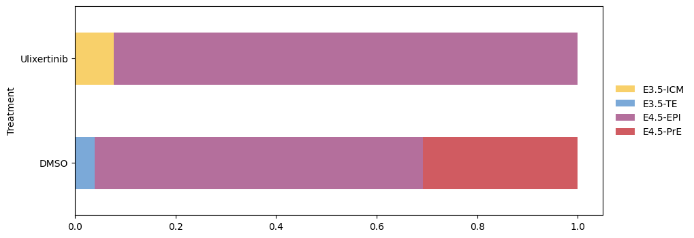
mouse_query.write('../results/12_niakan.mouse.withPredictions.h5ad')lvae = scvi.model.SCANVI.load('../results/12_mouse/scanvi_ns15')
lvae.adata.obs['predictions'] = lvae.predict()
lvae_q.adata.obs['predictions'] = mouse_query.obs.predictionsTrainer will use only 1 of 4 GPUs because it is running inside an interactive / notebook environment. You may try to set `Trainer(devices=4)` but please note that multi-GPU inside interactive / notebook environments is considered experimental and unstable. Your mileage may vary.
/home/fdb589/projects/data/Brickman/conda/envs/scvi-1.1.5/lib/python3.10/site-packages/lightning/fabric/plugins/environments/slurm.py:191: The `srun` command is available on your system but is not used. HINT: If your intention is to run Lightning on SLURM, prepend your python command with `srun` like so: srun python /home/fdb589/projects/data/Brickman/conda/envs/scvi- ...
/home/fdb589/projects/data/Brickman/conda/envs/scvi-1.1.5/lib/python3.10/site-packages/scvi/model/base/_utils.py:66: FutureWarning: You are using `torch.load` with `weights_only=False` (the current default value), which uses the default pickle module implicitly. It is possible to construct malicious pickle data which will execute arbitrary code during unpickling (See https://github.com/pytorch/pytorch/blob/main/SECURITY.md#untrusted-models for more details). In a future release, the default value for `weights_only` will be flipped to `True`. This limits the functions that could be executed during unpickling. Arbitrary objects will no longer be allowed to be loaded via this mode unless they are explicitly allowlisted by the user via `torch.serialization.add_safe_globals`. We recommend you start setting `weights_only=True` for any use case where you don't have full control of the loaded file. Please open an issue on GitHub for any issues related to this experimental feature.
model = torch.load(model_path, map_location=map_location)INFO File ../results/12_mouse/scanvi_ns15/model.pt already downloaded combined = anndata.concat([lvae.adata, lvae_q.adata])
combined.obs['dataset'] = 'Reference v1.1'
combined.obs.loc[lvae_q.adata.obs_names, 'dataset'] = 'Simon et al., 2024'
combined.obsm['X_scANVI'] = np.concatenate([lvae.get_latent_representation(), lvae_q.get_latent_representation()])
combined.obs.predictions = combined.obs.predictions.astype('category')
combined.obs['stage'] = [prediction.split('-')[-1] for prediction in combined.obs.predictions]
combined.obs.stage = combined.obs.stage.astype('category')
combined.uns['predictions_colors'] = [mouse_ct_colors[ct] for ct in combined.obs.predictions.cat.categories]
combined.uns['stage_colors'] = [lineage_colors[ct] for ct in combined.obs.stage.cat.categories]
combined.obs['highlight'] = combined.obs.predictions.astype(str)
combined.obs.loc[combined.obs.dataset == 'Simon et al., 2024', 'highlight'] = 'THIS_STUDY'
combined.obs['highlight'] = combined.obs['highlight'].astype('category')
combined.uns['highlight_colors'] = [mouse_ct_colors.get(ct, 'black') for ct in combined.obs.highlight.cat.categories]/home/fdb589/projects/data/Brickman/conda/envs/scvi-1.1.5/lib/python3.10/site-packages/anndata/_core/merge.py:1362: UserWarning: Only some AnnData objects have `.raw` attribute, not concatenating `.raw` attributes.
warn(sc.pp.neighbors(combined, use_rep='X_scANVI')
sc.tl.draw_graph(combined)
sc.tl.umap(combined)
sc.tl.diffmap(combined)
sc.tl.paga(combined, groups='predictions')
sc.pl.paga(combined, color=['predictions'], frameon=False, fontoutline=True)
sc.tl.draw_graph(combined, init_pos='paga', n_jobs=10)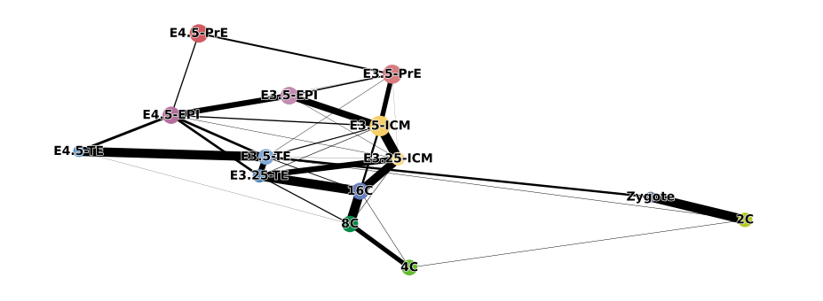
plt.rcParams['figure.figsize'] = [6, 4]
ax = sc.pl.umap(combined, color=['dataset', 'predictions', 'technology', 'stage'], ncols=2, wspace=0.3, return_fig=True)
ax.savefig('../figures/12_niakan_mouse_integration_umap.pdf')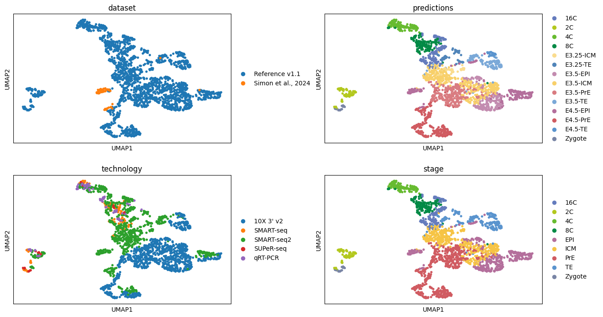
plt.rcParams['figure.figsize'] = [6, 4]
ax = sc.pl.draw_graph(combined, color=['dataset', 'predictions', 'technology', 'stage'], ncols=2, wspace=0.3, return_fig=True)
ax.savefig('../figures/12_niakan_mouse_integration_FA.pdf')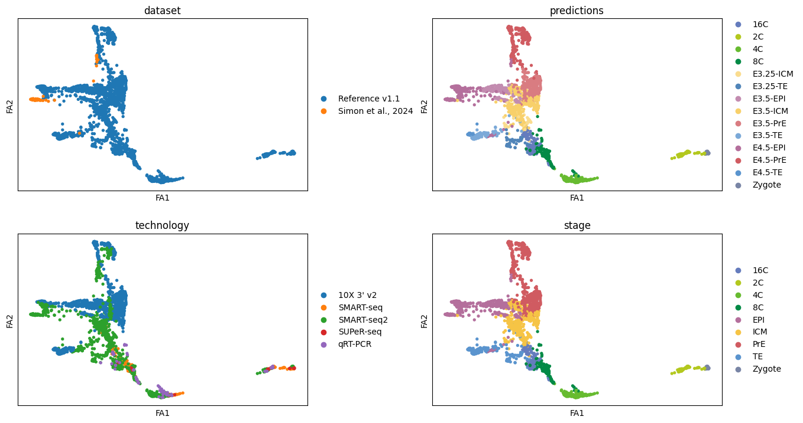
plt.rcParams['figure.figsize'] = [6, 4]
ax = sc.pl.draw_graph(combined, color=['experiment', 'predictions', 'highlight', 'stage'], ncols=2, wspace=0.45, return_fig=True)
ax.savefig('../figures/12_niakan_mouse_integration_FA_2.pdf')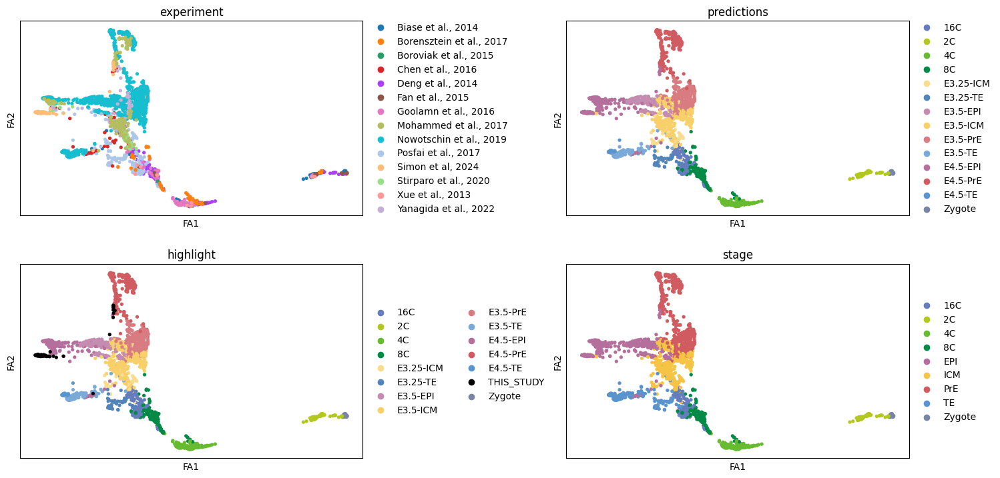
merged_subset = combined[combined.obs.predictions.str.contains('ICM|PrE|EPI')].copy()
merged_subset.obs['treatment'] = 'None'
merged_subset.obs.loc[merged_subset.obs_names.intersection(mouse_query.obs_names), 'treatment'] = mouse_query.obs.loc[merged_subset.obs_names.intersection(mouse_query.obs_names), 'Treatment'].values
merged_subset.uns['treatment_colors'] = ['tab:blue', 'lightgrey', 'tab:orange']
merged_subsetAnnData object with n_obs × n_vars = 1325 × 3000
obs: 'batch', 'experiment', 'technology', 'n_genes_by_counts', 'total_counts', 'total_counts_mt', 'pct_counts_mt', 'ct_custom', '_scvi_batch', '_scvi_labels', 'predictions', 'dataset', 'stage', 'highlight', 'treatment'
uns: 'predictions_colors', 'stage_colors', 'highlight_colors', 'neighbors', 'draw_graph', 'umap', 'diffmap_evals', 'paga', 'predictions_sizes', 'dataset_colors', 'technology_colors', 'experiment_colors', 'treatment_colors'
obsm: 'X_scANVI', 'X_draw_graph_fa', 'X_umap', 'X_diffmap'
layers: 'counts'
obsp: 'distances', 'connectivities'sc.pp.neighbors(merged_subset, use_rep="X_scANVI")
sc.tl.umap(merged_subset)
sc.tl.diffmap(merged_subset)
sc.tl.paga(merged_subset, groups='predictions')
sc.pl.paga(merged_subset, color='predictions', frameon=False, fontoutline=True)
sc.tl.draw_graph(merged_subset, init_pos='paga')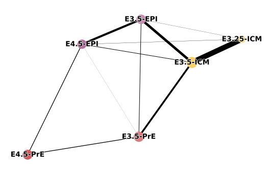
sc.pl.draw_graph(merged_subset, color=['stage', 'predictions', 'dataset'])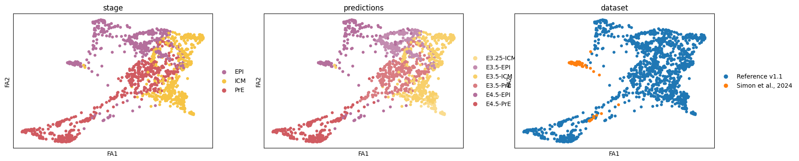
# sc.pl.diffmap(merged_subset, color=['stage', 'predictions', 'dataset'])
merged_subset.obsm["X_diffmap_"] = merged_subset.obsm["X_diffmap"][:, 1:]
sc.pl.embedding(merged_subset, "diffmap_", color=['stage', 'predictions', 'dataset'], wspace=0.2)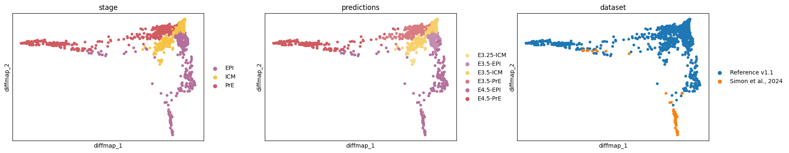
merged_subset.uns['iroot'] = np.flatnonzero(merged_subset.obs['predictions'] == 'E3.25-ICM')[0]
sc.tl.dpt(merged_subset)ax = sc.pl.embedding(merged_subset, "diffmap_", color=['predictions', 'treatment', 'stage', 'dpt_pseudotime'], ncols=2, wspace=0.25, return_fig=True)
ax.savefig('../figures/12_niakan_mouse_pseudotime_DC.pdf')
# ax = sc.pl.draw_graph(merged_subset, color=['predictions', 'treatment', 'stage', 'dpt_pseudotime'], ncols=2, wspace=0.25, return_fig=True)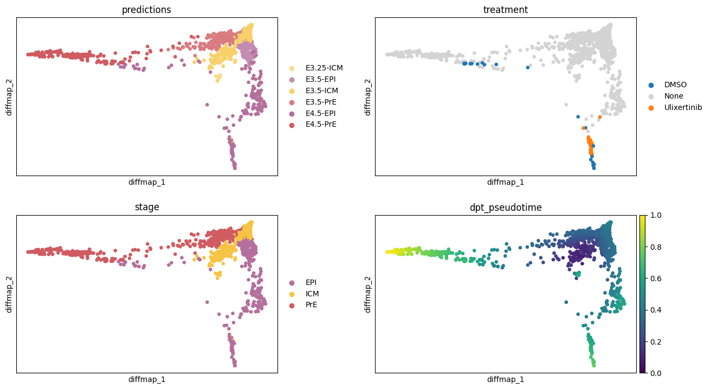
adata = merged_subset[merged_subset.obs.predictions.str.contains('ICM|EPI')]
adata = adata[adata.obs.sort_values(by='dpt_pseudotime').index].copy()df = adata.to_df()
df = (df - df.min()) / (df.max() - df.min())
df = df\
.assign(predictions=adata.obs.predictions.cat.codes.to_numpy())\
.assign(pseudotime=adata.obs.dpt_pseudotime.to_numpy())\
.assign(treatment=adata.obs.treatment)\
.assign(treatment_codes=adata.obs.treatment.cat.codes.to_numpy())\
.assign(DMSO=adata.obs.treatment == 'DMSO')\
.assign(Ulixertinib=adata.obs.treatment == 'Ulixertinib')
df['ps_bins'] = pd.cut(df.pseudotime, bins=np.arange(0, 1.1, 0.05))fig, ax = plt.subplots(9,1,figsize=(9,2.5))
for idx, gene in enumerate(['pou5f1', 'nanog', 'fgf4', 'klf17']):
sns.heatmap(df[[gene]].T, cmap='Reds', cbar=False, xticklabels=False, ax=ax[idx])
sns.heatmap(df[['DMSO']].T, cbar=False, cmap=['lightgrey', 'tab:blue'], xticklabels=False, ax=ax[4])
sns.heatmap(df[['Ulixertinib']].T, cmap=['lightgrey', 'tab:orange'], cbar=False, xticklabels=False, ax=ax[5])
sns.heatmap(df[['treatment_codes']].T, cbar=False, cmap=list(adata.uns['treatment_colors']), xticklabels=False, ax=ax[6])
sns.heatmap(df[['predictions']].T, cbar=False, cmap=adata.obs.predictions.map(mouse_ct_colors).cat.categories.tolist(), xticklabels=False, ax=ax[7])
sns.heatmap(df[['pseudotime']].T, cmap='viridis', cbar=False, xticklabels=False, ax=ax[8])
for ax_ in ax:
ax_.tick_params(axis='y', rotation=0)
fig.suptitle('Trajectory from ICM to EPI')
fig.savefig('../figures/12_niakan_mouse_pseudotime_ICM_EPI.pdf', bbox_inches='tight')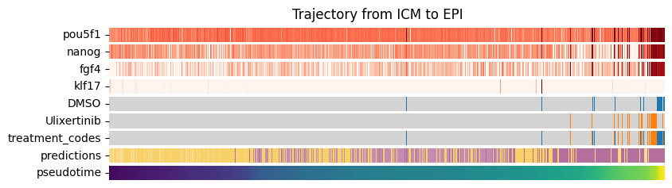
ax = (pd.crosstab(df.ps_bins, df.treatment, normalize='index') * 100).plot.bar(color=['tab:blue', 'lightgrey', 'tab:orange'], title='Treated cells over pseudotime', xlabel='Binned pseudotime', ylabel='% of cells')
ax.figure.savefig('../figures/12_niakan_mouse_pseudotime_ICM_EPI_treatment.pdf', bbox_inches='tight')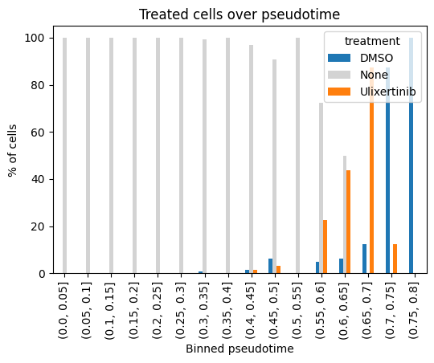
adata = sc.read_h5ad('../results/12_niakan.mouse.withPredictions.h5ad')
counts = sc.read_h5ad("../data/assays/SCR_MP_20241207/processed/combined_matrix.h5ad")
counts.var['gene_id'] = counts.var_names
counts.var_names = counts.var.gene_symbol.str.lower().values
counts.var_names_make_unique()
counts = counts[adata.obs_names, adata.var_names].copy()
counts.obs = adata.obs.copy()
counts.var = adata.var.copy()
counts.layers['counts'] = counts.X.copy()
sc.pp.normalize_total(counts, target_sum=1_000_000)
counts.write('../results/12_niakan.mouse.PRM_withPredictions.h5ad')